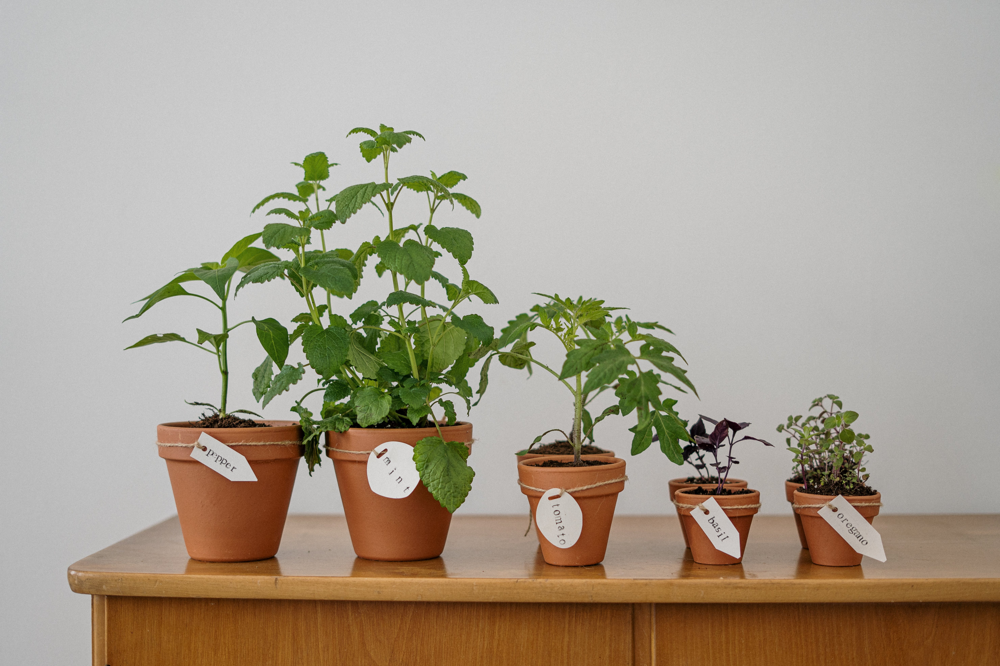

Topicos: Sustentabilidade.
Como cuidar do meio ambiente?

A preservação do meio ambiente depende muito da sensibilização e participação de todos os indivíduos de uma sociedade. A cidadania para a preservação do meio ambiente deve contemplar atividades e noções que contribuam para a conservação do meio ambiente.
O que é o Meio Ambiente?
O meio ambiente envolve todas as coisas com vida e sem vida que existem na Terra ou em alguma região dela e que afetam os outros ecossistemas existentes e a vida dos seres humanos.
O meio ambiente pode ter diversos conceitos, que são identificados pelos componentes que fazem parte dele.
Como cuidar do Meio Ambiente?
A sustentabilidade ambiental e ecológica é a manutenção do planeta Terra, é manter a qualidade de vida e manter o meio ambiente em harmonia com a existência das pessoas.
O próprio conceito de sustentabilidade sugere o uso consciente dos recursos da natureza, de forma que seja possível o acesso aos recursos ecossistêmicos por gerações futuras.
A sustentabilidade se refere às diversas medidas e estratégias que podem ser adotadas pela sociedade para que o meio ambiente seja preservado e seja considerado sustentável. Isso significa que devem ser encontradas formas de ação que permitam a coexistência das pessoas com a preservação do meio ambiente para que os recursos naturais não se esgotem.
São algumas medidas de sustentabilidade e preservação do meio ambiente: